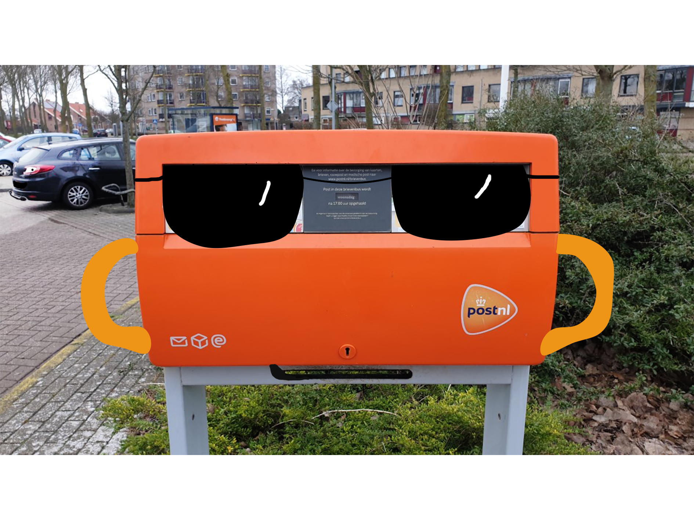
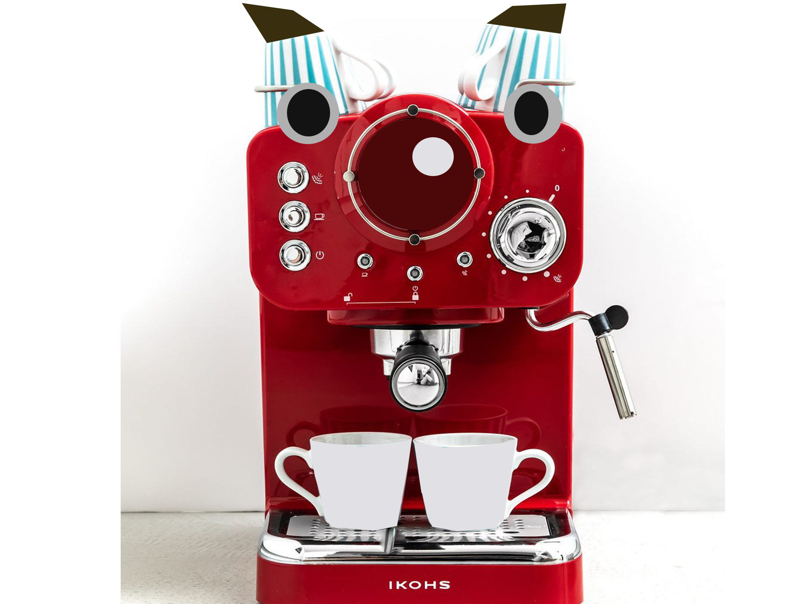
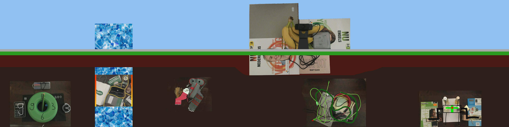
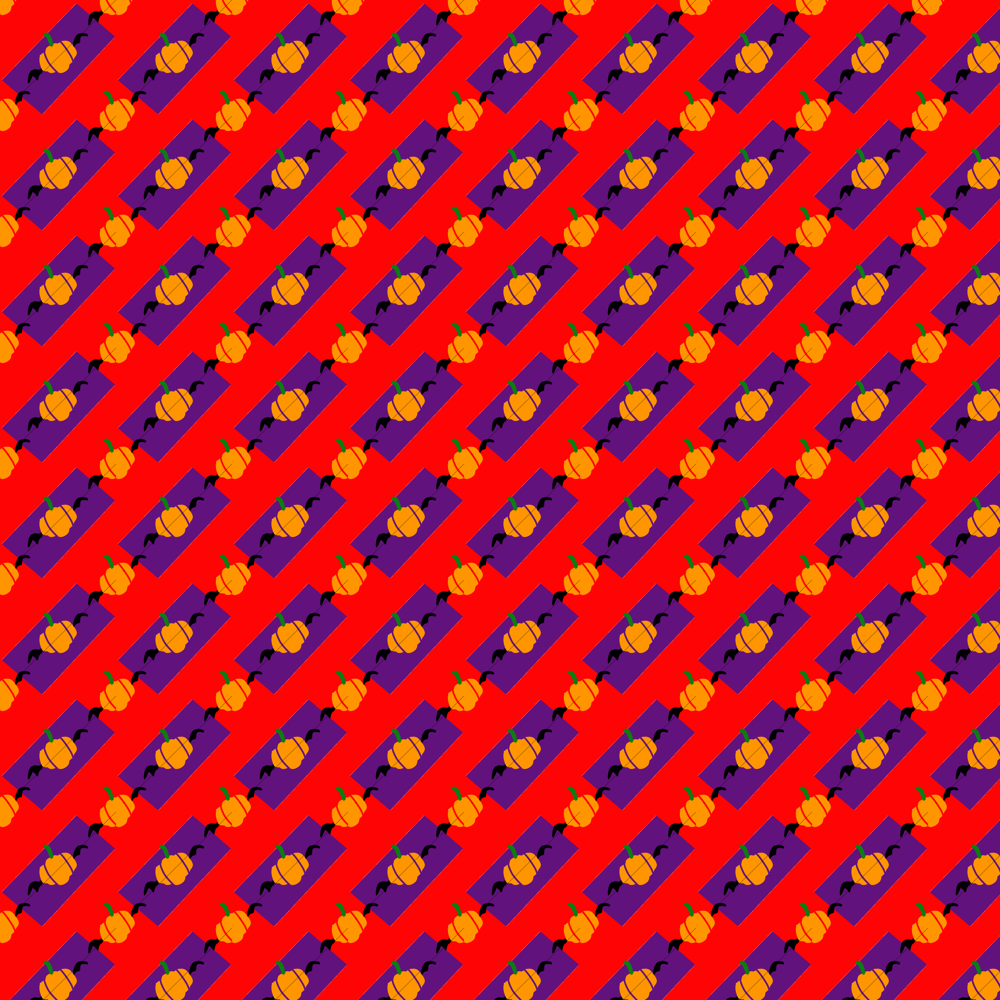

Sinds september 2020 heb ik allemaal verschillende opdrachten gedaan voor de opleiding waar ik nu in zit, en met verschillende opdrachten bedoel ik tekeningen maken met Adobe programma´s, waar ik ook dus mijn officiële logo heb ontworpen (Illustrator), en gezichten tekenen op bekende voorwerpen zoals een brievenbus/koffiezetapparaat.
 Daarna begon ik met Sidescrollers zoals de spelletjes Angry Birds en heel veel Super Mario spellen, maar voor dat ik het heb gedaan moest ik eerst allemaal huishoudelijke voorwerpen bij elkaar zetten. Wat je ziet zijn allemaal parfumflesjes die ik om heb gewerkt in een robot. Gaaf he?
Daaronder heb je de sidescroller zelf, met de robot rechts in deze afbeelding. Wat je eigenlijk ziet is een gebouw met snoeren op een leeg platteland, met een soort tombe ernaast. Onder de grond is een soort onbekende mysterieuze wereld waarop een kaart van een verloren dorp op de blauwe tombe met kristallen staat. Er wonen mysterieuze wezens inclusief de robot, maar er is ook een groep bijzondere slangen die rond hun huis kronkelen, een aparte type vogel, een nog een klok die op 12:03 staat.
Voor Halloween 2020 moest ik een passend patroon verzinnen, dus met mijn tekenvaardigheden zie je dus een pompoen met vleermuisvleugels op een rode achtergrond met paarse diagonale rechthoeken gemaakt met Adobe Photoshop. Zoiets kun je wel zien bij een tafelkleed of een behang.
